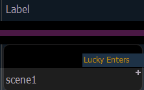

Cues can have notes attached to them.
These notes can be viewed in the Playback Status Display and the Cue List Index by hovering a mouse over or tapping on the + in the Label column.
You can also select to view the notes or the notes for the pending cue in a horizontal bar at the bottom of the PSD. See Playback Status Display Configuration for these additional display options.

To add a note to a cue:
To add a note to the currently selected cue, you can use [Shift] & [Label].
You can use the virtual alphanumeric keyboard or an external keyboard to enter the desired text.
See Copy To and Move To for Labels, Scenes, and Notes for more information.